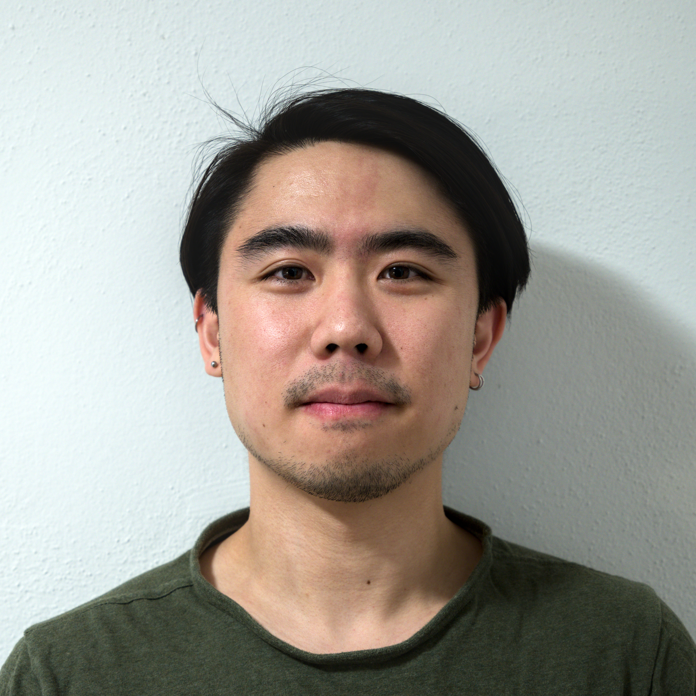
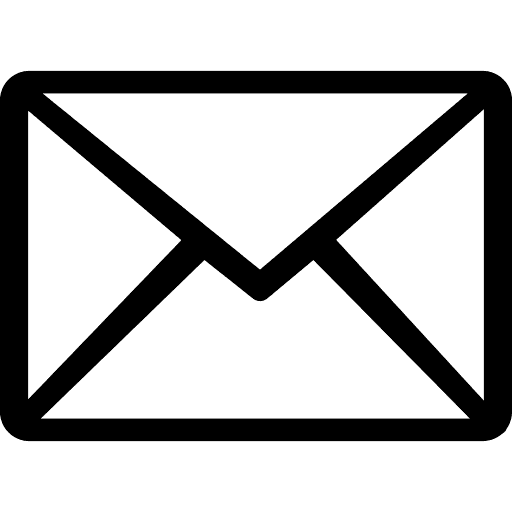
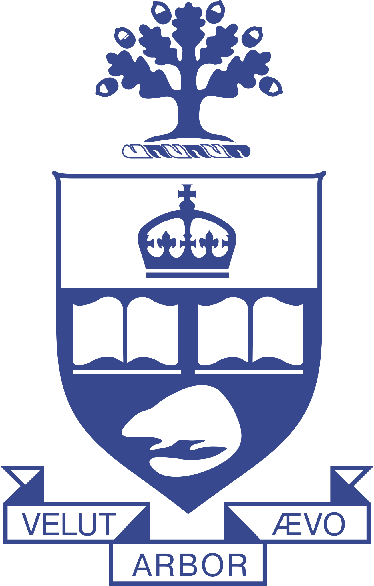
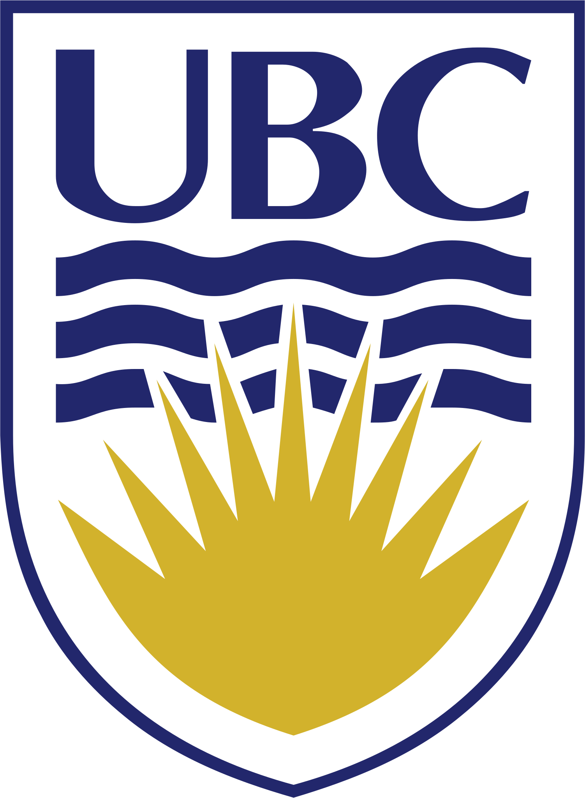
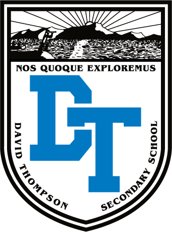

Julian Ding
Master's Student
Department of Computer Science
University of Toronto

 linkedin.com/in/julianzding
linkedin.com/in/julianzding
 JulianZDing
JulianZDing
I am a graduate researcher affiliated with the Toronto Computer Imaging Group and Physics-Informed Vision and Imaging group. My work focuses on novel methods to improve computational photography with state-of-the-art time-of-flight photon sensors, and lies at the intersection between artificial intelligence and experimental physics. I am currently co-supervised by Professors Aviad Levis, Kyros Kutulakos, and David Lindell.
Before arriving in Toronto, I was a full-time software developer and data scientist at Demonware (a studio under Activision Publishing), and an undergraduate researcher applying computer vision techniques to gravitational wave astronomy at UBC Gravitational Waves before that.
Scroll down for an abridged timeline of my scientific career!
Master's student at the University of Toronto
September 2026 - Present
My return to full-time research.

Software Developer/Data Scientist at Demonware
September 2022 - July 2026
Software developer and data scientist working on tooling and analysis for hardware capacity planning and forecasting.

May 2025
Transitioned to Data Scientist role after internal re-org.
January 2024
Promoted to P3 in software developer role.
September 2022
Started as an intermediate software developer (P2) on the Performance Engineering team.
Part-time researcher at UBC Gravitational Waves
May 2022 - August 2022
Continued work on image classification and noise filtering of gravitational wave data from Advanced LiGO. Supervised by Profs. Jess McIver and Raymond Ng.
Undergraduate at the University of British Columbia
September 2017 - April 2022
Bachelor of Science, majoring in a Combined Honours in Computer Science and Physics.

May 2022
Bachelor of Science conferred (with honours).
Work-Learn researcher at UBC Gravitational Waves
September 2021 - April 2022
Polished up UniMAP for publication, then transitioned to researching convolutional neural networks for noise classification and filtering applications.
NSERC USRA at UBC Gravitational Waves
May 2021 - August 2021
Worked on UniMAP: a model-free, multi-scale time-series anomaly detection algorithm for gravitational wave data. Supervised by Profs. Jess McIver and Raymond Ng.
Software developer intern at Demonware
September 2019 - August 2020
Built an automated hardware allocation service with HTTP and Slackbot interfaces.
NSERC USRA at Hyper-Kamiokande Group
May 2019 - August 2019
Automated convolutional neural network training pipelines for particle classification in the Hyper-K neutrino detector. Supervised by Drs. Wojciech Fedorko and Patrick de Perio.
Student at David Thompson Secondary School
September 2012 - June 2017
Member of the Odyssey Mini School program.
